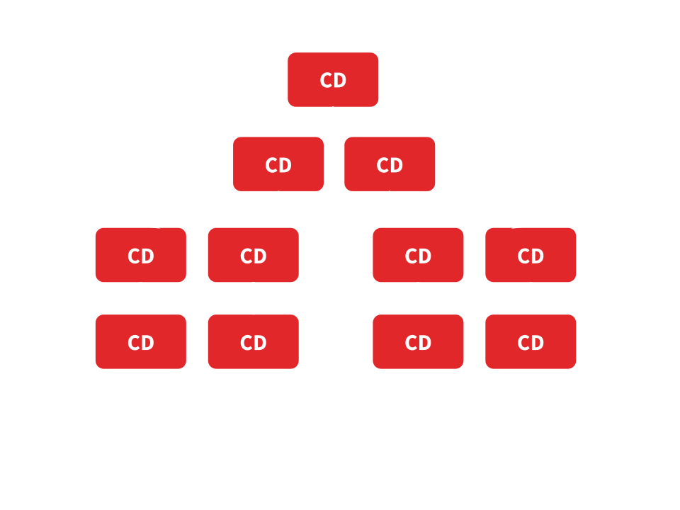

Console V2
Présentation technique des nouveautés
Sommaire
- Nouvelle architecture front
- Libs
- Quoi de neuf avec Angular
- Dev Tools
Nouvelle architecture front

Cool stuff!
- Angular dernière version
- Typescript
- Découpage modulaire
- Composants réutilisables : Demo Components
- Une appli pilote : Console v2
- Compilation en avance de phase (AOT)
- Hot Reload & Browser Debug
Libs


Libs principales
| Lib | Version |
|---|---|
| Angular | 4.1.0 |
| Typescript | 2.2.1 |
| Axios | 0.15.3 |
| Rxjs | 5.4.0 |
| Zone.js | 0.8.10 |
| Infra-components | 1.0.1 |
| Entcore-toolkit | 1.0.0 |
| Noty | 2.4.1 |
| Sijil | 1.0.0 |
| Webpack | 2.2.1 |
| Gulp | 3.9.1 |
Quoi de neuf avec Angular
Modules
- Séparation des fonctionnalités en module Angular : facilite le partage du travail
- Un module peut être importé dans un autre module
- Un module regroupe un ensemble de composants Angular
Exemple de module
@NgModule({
imports: [
CommonModule,
FormsModule,
InfraComponentsModule
],
declarations: [
FormField,
FormErrors,
AnchorDirective,
Datepicker
],
exports: [
FormField,
FormErrors,
AnchorDirective,
Datepicker
]
})
export class UxModule{}
Composants
- Controlleur + Vue
- Peut être réutilisé : permet le développement de librairies de composants, cf. Demo Components
- Une appli est un arbre de composants :
- Interaction entre composants :
- Input : permet de passer des valeurs en entrée du composant
- Output : permet d'émettre des évènements à l'extérieur du composant
Exemple de composant
@Component({
selector: 'list-component',
template: `
-
{{ display(item) }}
`,
styles: [`
ul {
margin: 0;
padding: 0px;
font-size: 0.9em;
}
`]
})
export class ListComponent implements AfterViewInit {
constructor(private cdRef: ChangeDetectorRef){}
@Input() model = []
@Input() isSelected = () => false
@Input() isDisabled = () => false
@Input() ngClass = () => ({})
@Input() display = (item) => { return item }
@Output("onSelect") onSelect: EventEmitter<{}> = new EventEmitter()
}
Router Angular
Module Lazy loading
Le router permet de charger un module à la volée par rapport à une URL
{ path: 'users', loadChildren: './modules/users/users.module#UsersModule' }
Resolver
Associé à une route, le Resolver permet de récupérer des données avant l'initialisation du composant associé à la route
export let routes : Routes = [{
path: 'admin',
resolve: { session: SessionResolve, structures : StructuresResolve }
}]
export class StructuresResolve implements Resolve {
resolve(): Promise {
return globalStore.structures.sync()
}
}
Schéma du routing de la console v2
Detection de changement
Comportement
- Zone.js: capte le début et fin d'activités asynchrones et lance la détection de changement
- Détection de changement unidirectionnelle du haut vers le bas
 - Détection de changement stable après une seule passe
Limiter la détection de changement
ChangeDetectionStrategy.OnPush: détection de changement uniquement si un Input du composant est modifié (référence)- Possibilité de marquer le composant manuellement
changeDetectorRef.markForCheck()
Rxjs
- Utilisation de l'api rxjs pour l'observation d'objets
- Utilisé notamment pour observer :
- les changements de l'objet URL du router
- les changements des objets Store (un Store par module)
Dev Tools
Code editor
- Typescript support :
- Autocomplete
- Analyse d'erreur en live
- Infos sur les types au survol
- Goto Declaration
- Rename refactoring
Hot Reload
- Webpack dev-server : Recharge automagiquement le navigateur suite à une modification du code
- Watcher Gulp : copie les ressources (css, i18n) vers le springboard suite à une modification de code
Debug Tools
- Console debug:
ng.probe($0).componentInstance
Debug Tools
- Source map: breakpoint
Exemples live
- Hot reload
- Debug tools